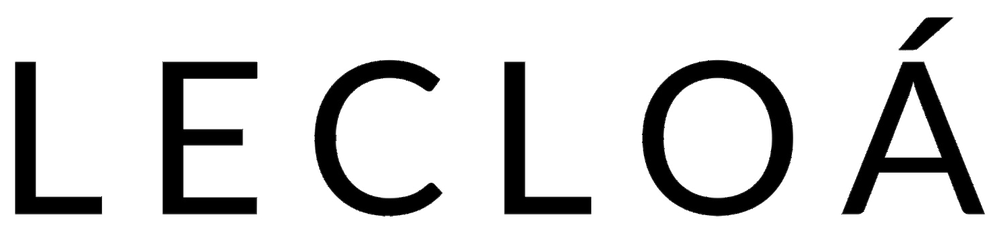

Informações e processos ainda não sustentam toda a velocidade da operação.
Há oportunidades de elevar a confiabilidade dos dados, antecipar decisões e reduzir dependências, retrabalhos, esperas e reações tardias.

Informe a senha para acessar a análise preparada especialmente para a LECLOÁ.
Uma leitura objetiva dos pontos de atenção levantados na reunião — conectando problemas, riscos, ações e impactos esperados.
Os desafios identificados estão conectados. Dados, finanças, comercial, produção, estoques e custos precisam operar como um único sistema de gestão.
Há oportunidades de elevar a confiabilidade dos dados, antecipar decisões e reduzir dependências, retrabalhos, esperas e reações tardias.
Uma base gerencial integrada pode melhorar previsibilidade financeira, direcionamento comercial, disponibilidade de materiais e fluidez produtiva.
A atuação conecta diagnóstico, indicadores, ferramentas de gestão e acompanhamento da execução para gerar melhorias sustentáveis.
Selecione uma frente. Cada análise apresenta três pontos prioritários em cada dimensão.
A ordem reduz o risco de criar indicadores sobre informações frágeis ou executar melhorias pontuais sem conexão com o resultado.
Conferir dados, rotinas e processos para criar uma base confiável.
Desenvolver processos, ferramentas e indicadores aderentes à operação.
Interpretar resultados, priorizar ações e acompanhar a execução.
O formato recomendado combina uma fase inicial de estruturação intensiva com acompanhamento contínuo para consolidar processos, indicadores e resultados.
Imersão, validação da base, estruturação dos primeiros controles e definição das prioridades de execução.
Monitoramento dos indicadores, ajustes estratégicos, desenvolvimento das frentes e consolidação da rotina de gestão.
O contrato poderá ser encerrado a qualquer momento, mediante aviso prévio de 30 dias.
Trabalhamos no detalhe. No dado. Na decisão.
Transformando pessoas e negócios.
Mais resultado, mais controle e mais clareza para a LECLOÁ.